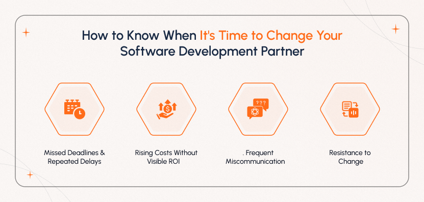
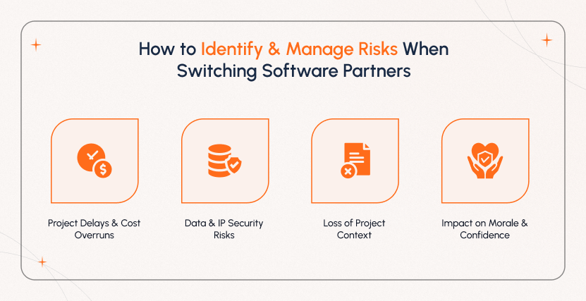
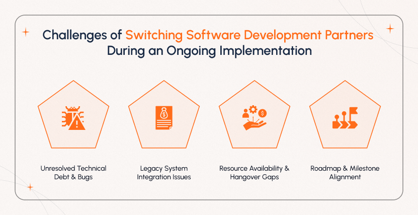
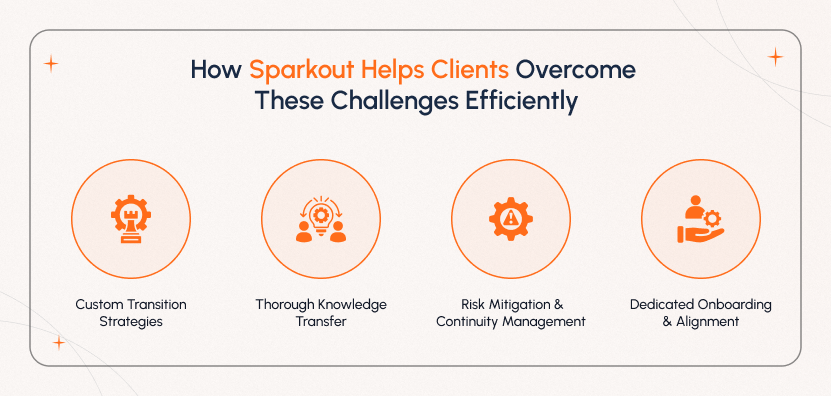

Is your current software development partner slowing your progress or failing to meet quality standards? It may be time to consider a change. In this blog, you will get to know how to switch software development partners efficiently without putting your projects at risk.
For many, switching software development partners can feel overwhelming. This is especially true when ongoing projects, tight deadlines, and stakeholders' expectations are on the line. But staying with the wrong web development team can eventually slow down your growth, drain your resources, and put your business at risk. Whether you are facing communication issues, missed deadlines, or declining code quality, learning to switch software development partners can save time, money, and stress.
In this guide, we will walk you through the practical strategies to maintain momentum, ensure a smooth transition, and achieve the results your business needs, all while minimizing project disruptions and maximizing results.
Why Should You Consider Changing Your Software Development Partner?
Many businesses usually hesitate to switch software development partners, considering the delays and workflow disruptions. However, continuing with a mismatched team can slow your growth, inflate costs, and compromise project success. Finding out the signs early allows you to make a strategic decision instead of responding to repeated setbacks.
Some of the most common reasons for switching development teams include:
1. Stalled Project Timelines
If your projects keep missing
the scheduled deadline, then the product launches get delayed, and your business
loses opportunities.
2. Poor Code Quality
Often, the frequent occurrence of
bugs, errors, and unstable systems makes your software unreliable and complex to
maintain.
3. Limited Innovation & Scalability
If your existing
software development partner is not bringing in any new ideas or doesn't offer the
scalability support when your business grows, then your software will fall behind
the competitors.
4. Misaligned Communication & Processes
When there is
confusion in workflows or poor communication between the teams, this leads the team
to misunderstandings and slow progress.
5. Budget Overruns
Hidden costs, repeated reworks, and
inefficiencies can make your project become much more expensive than the actual
planned phase.
6. Low Team Productivity
When the app development team
looks disengaged or unmotivated, workflow slows down, and the quality suffers.
Upon spotting any of these issues early, businesses can switch software development partners thoughtfully while keeping their projects on track, improving efficiency, and achieving stronger results.
How to Know When It's Time to Change Your Software Development Partner
Recognizing the right time to switch software development partners is as important as choosing the right one in the first place. Often, businesses delay the decisions, thinking the issues will get resolved over time. But waiting too long eventually makes problems harder and more expensive to fix.

Here are some of the clear signs that it's time to replace software development company:
1. Missed Deadlines & Repeated Delays
If your development
team frequently misses delivery dates even after escalations, then it means poor
project management or a lack of accountability. It is one of the solid reasons to
switch software development partners.
2. Rising Costs Without Visible ROI
When the software development cost keep
rising while the quality, speed, and performance of your product don't improve, then
your investment is not delivering value, and it's time for your current software
development contract termination.
3. Frequent Miscommunication
If the instructions are often
misunderstood or when the responsibilities are unclear, it leads to rework,
confusion, and wasted time.
4. Resistance to Change
A good software development
partner evolves with your business. If your current team fails to adopt new
technologies or processes, it means they are holding back your growth.
The persistence of any of these issues is a clear sign that you need to change your software development partner. Moving to a team that better aligns with your goals will help you regain momentum, improve collaboration, and ensure your projects deliver the results as required by your business.
Feeling Stuck With the Wrong Dev Team?
Find the signs early and plan a smooth switch before project issues grow bigger.
Key Challenges Businesses Face When Switching Software Development Partners
Switching development teams is a complex transition, and it often requires careful planning and coordination. Without following the right approach, businesses may face multiple challenges that can affect the timelines, quality, and operations.
Some of the common pain points to watch out for:
1. Knowledge Transfer Gaps
Whenever a project moves from
one team to another, key technical details or undocumented processes may get lost.
This, in turn, leads to delays or rework.
2. System Downtime or Disruptions
Transitions at times
affect the live systems or cause brief downtime. This, in turn, impacts end-users or
business operations.
3. Contractual & Legal Complexities
Ending an existing
partnership or transferring intellectual property can involve legal hurdles that
require clear documentation and mutual agreement.
4. Stakeholder Confidence & Continuity
Clients, investors,
and internal teams may worry about the project's future during the switch.
Addressing their concerns at the early stage helps maintain trust and stability.
Upon understanding these pain points in advance and planning for them strategically, it is possible to switch software development partners smoothly with reduced risks. This way, you can ensure your projects continue without interruptions.
How to Identify & Manage Risks When Switching Software Partners
Even after making the best planning, recruiting software solution development partners can come with certain risks. Thus, knowing these challenges beforehand helps you prepare the right strategies to minimize their impact and keep your projects on track.

Here are some common risks to look for:
1. Project Delays & Cost Overruns
When the transition
between the teams is either unplanned or rushed, it leads to missed deadlines,
duplicated work, and unexpected expenses.
2. Data & IP Security Risks
During the handover, there is a
chance for the sensitive project data or proprietary code to get exposed. This can
take place when proper security protocols aren't followed.
3. Loss of Project Context
When the outgoing team fails to
document the workflows, dependencies, and technical details, the new team will find
it hard to understand the entire view of the ongoing project.
4. Impact on Morale & Confidence
Changes in teams can
cause uncertainty among internal staff and clients. This in turn, affects the trust
and motivation.
By understanding the risks in an early stage, you can put clear transition plans, security protocols, and documentation practices in place. This ensures a smoother IT project transfer with very little disruption.
How to Switch Software Development Partners Seamlessly
Switching software development partners can be made effortless without disrupting the project or slowing down the delivery. A structured, step-by-step approach ensures accountability and supports seamless handover between teams.
The step-by-step process to follow includes:
1. Audit Your Current Project & Code Quality
Begin by
assessing the existing codebase, architecture, and performance. The new team should
be aware of the problematic areas and technical debt to efficiently handle them.
2. Document Everything Clearly
It is vital to record the
workflows, integrations, dependencies, and project scope in detail. By having proper
documentation, the new team can pick up where the previous team left off and
identify what needs to be done further.
3. Plan a Phased Transition
Rather than switching
everything at once, it is better to divide the process into stages. This helps
prevent downtime and allows for easier troubleshooting.
4. Define KPIs and Success Metrics
The new partner will be
accountable upon setting measurable goals for delivery timelines, code quality, and
performance benchmarks.
5. Execute a Thorough Knowledge Transfer
Upon conducting
structured sessions, sharing documentation, and aligning both teams to ensure a
smooth start with minimal disruptions.
By following the above process, it is easier to switch software development partners strategically and efficiently. This approach not only works for project continuity during vendor switch but also reduces the risks and sets up new collaboration for long-term success.
Plan Your Partner Switch the Right Way
Follow a structured process to ensure a smooth transition, clear handover, and zero disruption to your project.
Challenges of Switching Software Development Partners During an Ongoing Implementation
Switching software development partners during the middle of an active project is one of the toughest decisions any business needs to make. Mid-project changes can bring in both technical and operational challenges. If the transition is not handled carefully, there is a high chance of delay in progress, which affects the overall project success.

Here are the most common challenges businesses encounter:
1. Unresolved Technical Debt & Bugs
The new team often gets
involved in coding issues, incomplete features, and inconsistent documentation from
the previous developers. As a result, the new team takes up time to understand all
of them and fix them.
2. Legacy System Integration Issues
Most times, older
systems or third-party integration may not be properly documented. This eventually
makes it harder for the new team to ensure compatibility and stability.
3. Resource Availability & Hangover Gaps
Whenever the key
developers from the previous vendor are unavailable or fail to cooperate, there is a
high possibility that the critical knowledge and project insights will be lost.
4. Roadmap & Milestone Alignment
The new team should
quickly get up to speed with your product vision, delivery goals, and sprint
schedules. This helps avoid unnecessary rework or delays.
Upon predicting the above challenges early, businesses can plan a smoother software vendor transition. This helps with maintaining project momentum and ensures your new development partner delivers results without compromising timelines or quality.
How Sparkout Helps Clients Overcome These Challenges Efficiently
At Sparkout, we specialize in helping businesses switch software development partners confidently and smoothly. Since we follow a structured approach, we ensure to minimize the disruption, protect project results, and offer a seamless transition from your previous vendor.

Here is how we make it happen:
1. Custom Transition Strategies
With a detailed,
client-centric transition plan, we ensure that the plan aligns with your project
scope, timelines, and business priorities.
2. Thorough Knowledge Transfer
Our team ensures each
documentation, codebase detail, and technical insight is captured and transferred to
maintain continuity.
3. Risk Mitigation & Continuity Management
We identify the
potential risks at an early stage and put proactive measures in place to prevent
project delays or quality issues.
4. Dedicated Onboarding & Alignment
We efficiently carry
out onboarding new software teams, ensure clear communication channels, and align on
milestones from day one.
With Sparkout, switching to a new development partner becomes a structured and transparent process. This way, we help you keep your business goals on track while ensuring stability and reducing downtime.
Ready for a risk-free transition?
Make your software development partner switch smarter, smoother, and more strategic with Sparkout.
Best Practices for Switching Your Software Development Partner
At Sparkout, our actual goal is beyond repairing what’s broken. It is to help Switching software development partners is a major decision, and following the right practices can make the transition process smooth and secure. A well-planned approach not just minimizes the risks but also sets the foundation for long-term success with the new partner.
Some of the best practices to follow include:
- It is vital to maintain transparency with all stakeholders, including clients, internal teams, and vendors, about the timelines, responsibilities, and expectations to avoid confusion or misalignment.
- Instead of switching everything at once, it is better to follow a phased transition to move critical modules or components in stages. This helps identify and fix issues early without disrupting the entire system.
- By documenting everything, it is possible to create detailed records of processes, integrations, and technical details. A comprehensive documentation ensures a smooth handover and faster onboarding for the new team.
- It is good to validate or test your new partner's capabilities through a smaller, well-defined pilot project before you get yourself fully committed to long-term work.
- You shall review all the legal and IP agreements carefully to protect your assets and ensure a clean, compliant transition.
By following these best practices for switching software development partners, you can easily minimize the downtime, maintain quality, and build a stronger foundation for future success.
A Step-by-Step Roadmap to Change Software Development Vendor
With a systematic approach, switching software development partners becomes much simpler. A clear, step-by-step plan given below will help maintain continuity, reduce confusion, and ensure that the new vendor aligns with your business goals.
Here is how to make the transition seamlessly:
Step 1: Assess your Current Partner's Performance
Find out
what's working and what is not, like communication issues, development quality
issues, and missed deadlines, etc. This helps you define what you need from your new
partner.
Step 2: Define Clear Objectives for the New Partnership
Decide on the goals like faster delivery, better innovation, and
improved scalability. This helps you with vendor selection and the transition plan.
Step 3: Audit and Document Ongoing Projects
Collect all the
technical documentation, workflows, credentials, and dependencies for a smooth
handover without data loss or confusion.
Step 4: Select & Onboard the New Development Team
Ensure to
select a partner with proven experience in your domain and onboard them with
detailed context and clear communication.
Step 5: Monitor Transition with KPIs and Feedback Loops
You
can track progress using defined metrics like delivery speed, defect rates, and team
responsiveness to ensure accountability.
Step 6: Ensure Post-Transition Support & Stabilization
Offer time for fine-tuning and performance checks after the
handover to confirm that everything runs smoothly.
Upon following these structured steps, you can switch software development partners and maintain project momentum without compromising quality.
How to Avoid Costly Mistakes When Switching Software Development Vendors
Even experienced organizations can find difficulties during a vendor transition. Common mistakes that occur when you change software development vendors include failing to document the project's history, which in turn leads to confusion and wasted time.
Rushing the onboarding process results in overlooked details and misalignment. When the team morale and communication are neglected, friction between the old and new team occurs, which in turn affects productivity. Above all, not validating the new vendor's technical expertise will eventually cause delays and quality issues later on.
Upon staying aware of these pitfalls and planning carefully, you can ensure the process of switching your software development partner is smooth, transparent, and disruption-free.
How to Measure the Success of Your New Software Development Partnership
When the transition is complete, it is essential to measure the tangible outcomes that reflect the ROI and performance. You shall even track the project delivery timelines and milestone adherence to ensure progress remains steady. The technical excellence can be evaluated via code quality and defect density. In addition to this, success can be measured by monitoring the team productivity and cross-functional collaboration for operational efficiency. Finally, gather stakeholders' satisfaction and client feedback to gauge confidence in the new partnership.
With the above metrics, you shall collectively confirm whether your software development partner switch is bringing the business outcomes, reliability, and innovation you aimed for.
Conclusion
The right software development partner will be able to find out how fast and efficiently your business scales. If your current provider is falling short, such as by missing deadlines, lacking innovation, or slowing delivery, then it's time for a smarter switch. At Sparkout, we handle every stage of your transition with precision and ensure business continuity, protecting your IP, and onboarding a performance-driven team in such a way that aligns with your long-term goals.